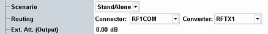
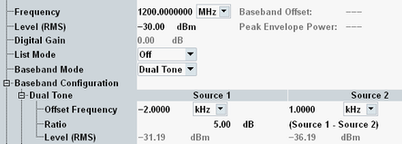
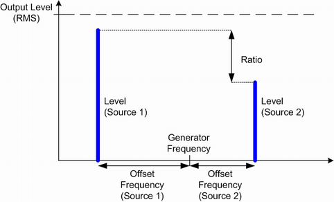

Generators provide RF signals for test purposes. The following example uses the general-purpose RF (GPRF) generator.
The GPRF generator provides an RF signal at constant frequency or at a series of configurable frequencies and levels. It is also possible to generate an RF signal that is modulated using a waveform file. All RF signals are configured in a similar way.
As an example, we generate a dual-tone signal at constant frequency. Proceed as follows:
Enable the "GPRF Generator" application:
If you operate the GUI via a large screen, the GUI is by default in multiple-window mode.
In the main window, enable the checkbox behind the "General Purpose RF Generator" entry.
If you operate the GUI via a built-in instrument display, the GUI is in single-window mode.
Press SIGNAL GEN to open the "Generator/Signaling Controller" dialog.
Enable the checkbox behind the "General Purpose RF Generator" entry.
In the "GPRF Generator" application, configure the RF routing. In this example, we use port RF 1 COM.
For "Scenario" and "Routing", use the default settings.
If your test setup contains a known, frequency-independent attenuation, enter the value as "Ext. Att. (Output)".

Resulting settingsConfigure the signal properties.
Select the "Frequency" (1200 MHz) and "Level (RMS)" (-30 dBm) of the RF output signal.
Ensure that the "List Mode" is off.
Select the "Baseband Mode" "Dual Tone".
In the "Baseband Configuration > Dual Tone" section, configure the properties of the dual-tone signal. To superimpose two CW signals at different frequencies and levels, set the "Offset Frequency" of both signals and define a "Ratio" that is different from 0 dB; see figures below.

Resulting settingsTo switch on the RF generator, right-click the "GPRF Generator" softkey and click ON.

To tap the resulting RF generator signal, proceed with "Measuring an RF Signal".
ARB generator The GPRF dual-tone signal is an example for a real-time generator signal. As an alternative, the GPRF generator application provides the arbitrary ("ARB") baseband mode. The ARB generator signal is based on a "waveform file" which is loaded and processed at runtime. For details, refer to the "GPRF Generator" description. |